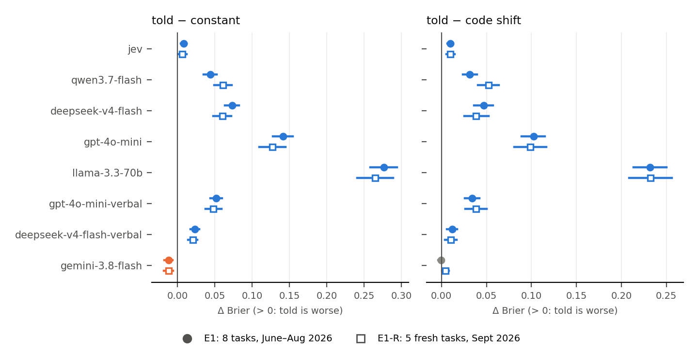

Progress report 1: base rate in the prompt, or in code?
2026-09-28, 19:45 EDT · autonomous v2 session · Haiku 4.5 still running (rate-limited), so every count below covers 8 of 9 model configurations.
Where things stand
Candidate headline finding. Put a known base rate in an LLM's prompt ("about 22% of cases like these are yes"). For 7 of the 8 configurations tested, the resulting probabilities score
worse (higher Brier) than simply predicting that 22% for every case. They also score worse than applying the same number in code as a one-parameter shift of the model's untold scores. The one exception is Gemini 3.8 Flash, the strongest ranker here.
- This pattern emerged post hoc in E1 (8 tasks). It then held in E1-R, a preregistered replication on 5 fresh September-2026 task samples that no model or analysis had touched.
- Every predicted sign was confirmed after Holm correction, and all 3 seeds agree.
- Haiku's replication is still pending.
The originally preregistered E1 primary criterion (told vs shift significant on ≥5/8 tasks per model) was met by only 2 configurations, GPT-4o-mini and Llama-3.3-70B. The v1 claim "5/8 for Jev" did not replicate on the leak-repaired data: Jev reached 3/8.
What was done since the start of this session
- Validity fixes.
- A single-feature leak screen covered every task and feature.
- Repaired leaks: shelter (
sex, intake_condition dropped; alone, sex gave CV AUROC 0.78), GitHub (the draft state at closing), and crimes (police-initiated offence types dropped).
- New baselines, trained on the same 100 labels that give the stated rate. A constant, Platt(100), and logistic regression LR(100).
- 9 model configurations, 7 providers, each pinned to one provider.
- First-token logprobs: Jev (native probabilities), Qwen3.7-Flash, DeepSeek-V4-Flash, GPT-4o-mini, Llama-3.3-70B.
- Stated probabilities: Gemini 3.8 Flash, Claude Haiku 4.5, and GPT-4o-mini and DeepSeek asked the same way (same models, different elicitation).
- GPT-4o-mini and Llama have 2023 training cutoffs, and E1-R data is from September 2026, after every model's cutoff. That addresses the memorisation concern.
- Preregistrations (RESEARCH_AGENDA.md §2 and §3) were committed before each data collection, and every deviation is logged in AUTONOMOUS_LOG.md.
Results (Brier differences; positive = the first-named arm is worse)
Pooled over tasks per model (mean of per-task, seed-averaged differences; bootstrap within task, B=5000). Bold = significant after Holm across models. Each model has 3 seeds; each seed is a different 100-label estimate of the base rate.

E1-R (preregistered confirmatory; 5 fresh tasks × 3 seeds × 300 test cases)
| Model | told − constant | told − code shift | code shift − constant | Platt(100) − code shift |
|---|
| jev | +0.006 [+0.001, +0.012] | +0.010 [+0.005, +0.015] | -0.004 [-0.006, -0.001] | +0.000 [-0.003, +0.003] |
| qwen3.7-flash | +0.061 [+0.049, +0.073] | +0.052 [+0.041, +0.064] | +0.009 [+0.003, +0.015] | -0.011 [-0.016, -0.006] |
| deepseek-v4-flash | +0.060 [+0.048, +0.072] | +0.039 [+0.025, +0.052] | +0.021 [+0.014, +0.029] | -0.023 [-0.030, -0.016] |
| gpt-4o-mini | +0.127 [+0.110, +0.144] | +0.098 [+0.081, +0.117] | +0.028 [+0.019, +0.038] | -0.028 [-0.038, -0.019] |
| llama-3.3-70b | +0.265 [+0.241, +0.289] | +0.232 [+0.209, +0.256] | +0.032 [+0.022, +0.042] | -0.032 [-0.041, -0.022] |
| gpt-4o-mini-verbal | +0.048 [+0.037, +0.059] | +0.038 [+0.027, +0.050] | +0.010 [+0.005, +0.015] | -0.009 [-0.014, -0.004] |
| deepseek-v4-flash-verbal | +0.020 [+0.014, +0.027] | +0.010 [+0.004, +0.017] | +0.010 [+0.004, +0.016] | -0.008 [-0.014, -0.002] |
| gemini-3.8-flash | -0.012 [-0.019, -0.006] | +0.004 [+0.000, +0.008] | -0.017 [-0.024, -0.010] | -0.001 [-0.003, +0.001] |
E1 (8 tasks; told − shift was the preregistered primary, the other columns are post hoc)
| Model | told − constant | told − code shift | code shift − constant | Platt(100) − code shift |
|---|
| jev | +0.008 [+0.004, +0.012] | +0.010 [+0.007, +0.013] | -0.001 [-0.004, +0.001] | -0.000 [-0.003, +0.002] |
| qwen3.7-flash | +0.044 [+0.035, +0.052] | +0.032 [+0.024, +0.040] | +0.012 [+0.007, +0.018] | -0.014 [-0.018, -0.010] |
| deepseek-v4-flash | +0.073 [+0.063, +0.083] | +0.047 [+0.036, +0.057] | +0.026 [+0.019, +0.033] | -0.026 [-0.032, -0.019] |
| gpt-4o-mini | +0.141 [+0.128, +0.154] | +0.102 [+0.089, +0.115] | +0.039 [+0.031, +0.047] | -0.036 [-0.044, -0.028] |
| llama-3.3-70b | +0.276 [+0.258, +0.294] | +0.232 [+0.213, +0.250] | +0.044 [+0.035, +0.054] | -0.041 [-0.049, -0.034] |
| gpt-4o-mini-verbal | +0.052 [+0.044, +0.059] | +0.034 [+0.026, +0.042] | +0.018 [+0.012, +0.023] | -0.016 [-0.022, -0.011] |
| deepseek-v4-flash-verbal | +0.023 [+0.017, +0.029] | +0.012 [+0.006, +0.017] | +0.011 [+0.006, +0.016] | -0.011 [-0.014, -0.007] |
| gemini-3.8-flash | -0.012 [-0.018, -0.007] | -0.001 [-0.004, +0.002] | -0.012 [-0.017, -0.006] | -0.001 [-0.003, +0.000] |
E1 preregistered per-task criterion (Holm across 8 tasks within model)
| Model | Provider | Tasks | shift better (Holm) | told better (Holm) | Mean Δ Brier |
|---|
| jev | TypeSafe | 8 | 3 | 0 | +0.0097 |
| qwen3.7-flash | Alibaba | 8 | 1 | 0 | +0.0315 |
| deepseek-v4-flash | DeepSeek (StreamLake) | 8 | 4 | 0 | +0.0467 |
| gpt-4o-mini | OpenAI | 8 | 5 | 0 | +0.1023 |
| llama-3.3-70b | Meta (Parasail) | 8 | 6 | 0 | +0.2320 |
| gpt-4o-mini-verbal | OpenAI | 8 | 2 | 0 | +0.0341 |
| deepseek-v4-flash-verbal | DeepSeek (StreamLake) | 8 | 3 | 0 | +0.0117 |
| gemini-3.8-flash | Google | 8 | 0 | 0 | -0.0007 |
Reading the results
- Mechanism (exploratory, E1).
- Telling roughly halves each model's miss of the base rate (mean absolute miss 0.05–0.35 when told, vs 0.11–0.39 zero-shot) but leaves a residual. Llama gets worse when told, because its first-token probabilities are nearly binary.
- Ranking doesn't change (AUROC told ≈ zero-shot).
- The code-side shift removes the miss exactly and keeps the ranking.
- This is not only an artefact of logprob elicitation. The same two models asked to state probabilities show the same sign, with smaller effects.
- Where the finding stops: Gemini 3.8 Flash ranks these tasks best (zero-shot AUROC ≈ 0.70). Told Gemini beats the constant, and told ≈ shift: +0.004 in E1-R, significant but tiny.
- Sobering baseline result (post hoc). On the leak-repaired tasks, only Gemini's probabilities clearly beat the constant. For the cheap models, even the best code-side fix (Platt on 100 labels) only matches the constant, and LR(100) beats their shifted scores.
Survived vs killed
| Survived / new | Killed or weakened |
|---|
- NEW (confirmed in E1-R): telling the base rate scores worse than the constant, for 7/8 configurations from 5 providers.
- Telling scores worse than the code shift for 8/8 in E1-R. Gemini's prediction was a null; it came out a tiny positive.
- Telling beats zero-shot on most configurations. Telling helps, but not enough.
- v1: in-context examples help ranking on 5/8 tasks (not re-run).
|
- v1 "shift beats telling on 5/8 for Jev" → 3/8 on repaired data.
- v1 "one sentence fixes most of it": measured against zero-shot, not the constant.
- Shelter, crimes and GitHub v1 AUROCs: inflated by leaks.
- All v1 Opus claims: withdrawn (provider-route confound, contamination unchecked).
- Full list: CLAIMS.md (12 killed claims).
|
What's next
- Finish Haiku (E1 + E1-R), then the final Holm over all 9 configurations. Send the CONFIRMED/NEW message.
- Red-team the finding:
- Does it hold on tasks where the model ranks well (AUROC ≥ 0.65)?
- Is it the sentence's position or wording? E1 already tested 2 extra wordings.
- Is it the one-token logprob protocol?
- README rewrite as a neutral guide, DIGEST, website draft.
API spend (v2 ledger; v1 spent $33.56 before this session)
| Model | Decisions | Cost |
|---|
| claude-haiku-4.5 | 15,155 | $1.299 |
| llama-3.3-70b | 22,900 | $0.624 |
| gemini-3.8-flash | 23,180 | $0.620 |
| gpt-4o-mini | 22,764 | $0.463 |
| gpt-4o-mini-verbal | 30,030 | $0.268 |
| deepseek-v4-flash | 22,833 | $0.146 |
| qwen3.7-flash | 22,721 | $0.103 |
| jev | 23,180 | $0.083 |
| deepseek-v4-flash-verbal | 23,180 | $0.070 |
| Total v2 | | $3.68 |
|---|
Hard cap for this session: $30. The OpenRouter account is shared with other agents.